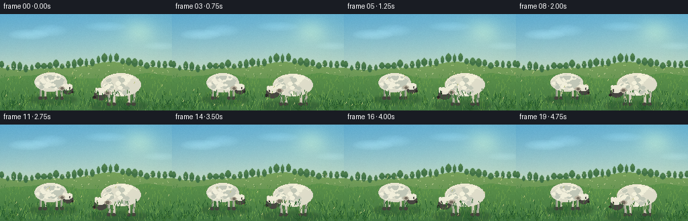
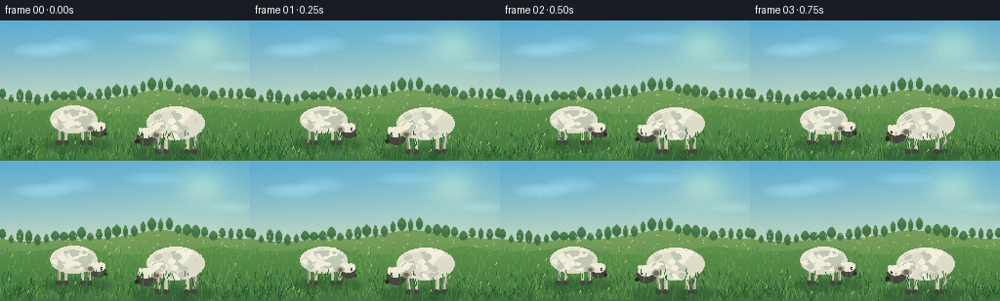
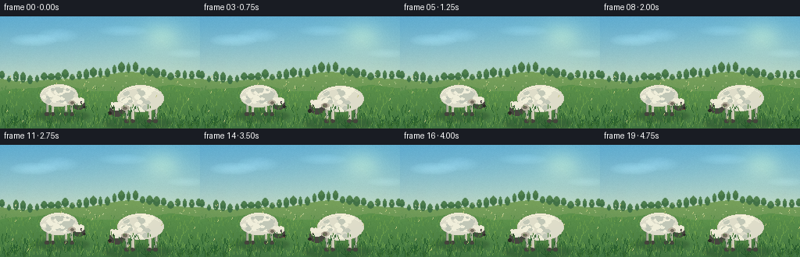
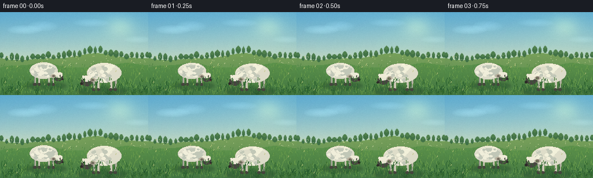

CODING AGENTS AS PIXEL WORLD MODELS
traex/DeepSeek-V4.1-Flash · instance_preservation_0017
点击播放 · 原生 RGB 像素
逐轮保存的候选
回放视频、检查图与代码变化。
每份候选均可单独播放。实际图片检查记录在下方工具轨迹中。
候选 01播放与检查图
点击播放 · 原生 RGB 像素


展开代码变化
--- 上一保存版本
+++ 本次保存版本
@@ -0,0 +1,354 @@
+from pathlib import Path
+
+import numpy as np
+from PIL import Image, ImageDraw, ImageFilter
+
+from artifact_io import save
+
+
+ROOT = Path(__file__).resolve().parent
+WIDTH, HEIGHT = 256, 144
+FRAMES, FPS = 20, 4.0
+
+
+def rng_for(seed):
+ return np.random.default_rng(seed)
+
+
+def mix(a, b, amount):
+ return tuple(int(round(a[i] * (1.0 - amount) + b[i] * amount)) for i in range(3))
+
+
+def soft_gradient(width, height, top, bottom, curve=1.0):
+ image = Image.new("RGB", (width, height))
+ pixels = np.asarray(image).copy()
+ for y in range(height):
+ t = (y / max(1, height - 1)) ** curve
+ pixels[y, :] = mix(top, bottom, t)
+ return pixels
+
+
+def make_sky():
+ rng = rng_for(41)
+ pixels = soft_gradient(WIDTH, 104, (101, 176, 211), (224, 230, 191), 1.25)
+ yy, xx = np.mgrid[:104, :WIDTH]
+
+ sun = np.exp(-(((xx - 207) / 34.0) ** 2 + ((yy - 24) / 25.0) ** 2) * 2.1)
+ warm = np.exp(-(((xx - 204) / 60.0) ** 2 + ((yy - 29) / 42.0) ** 2))
+ pixels = pixels.astype(np.float32)
+ pixels += sun[:, :, None] * np.array([32, 23, 5], dtype=np.float32)
+ pixels += warm[:, :, None] * np.array([9, 6, 0], dtype=np.float32)
+
+ # Broad, nearly stationary cloud banks give the sky structure without
+ # competing with the sheep.
+ for cx, cy, rx, ry, brightness in [
+ (42, 30, 31, 8, 22),
+ (73, 24, 26, 9, 16),
+ (157, 18, 31, 7, 14),
+ (238, 47, 25, 6, 12),
+ ]:
+ d = ((xx - cx) / rx) ** 2 + ((yy - cy) / ry) ** 2
+ core = np.clip(1.0 - d, 0, 1) ** 0.55
+ edge = np.exp(-d * 2.5)
+ pixels += (core * 0.55 + edge * 0.45)[:, :, None] * brightness
+
+ grain = rng.normal(0, 1.6, (104, WIDTH, 1))
+ pixels += grain
+ return np.clip(pixels, 0, 255).astype(np.uint8)
+
+
+def hill_points(base, amplitude, phase, frequency):
+ x = np.arange(WIDTH, dtype=np.float32)
+ return base + amplitude * np.sin(x * frequency + phase) + amplitude * 0.34 * np.sin(x * frequency * 2.4 + phase * 1.7)
+
+
+def fill_terrain(pixels, top_line, color_top, color_bottom, seed, texture_strength=1.0):
+ rng = rng_for(seed)
+ for x in range(WIDTH):
+ top = int(np.clip(round(top_line[x]), 0, HEIGHT))
+ if top >= HEIGHT:
+ continue
+ depth = HEIGHT - top
+ colors = np.linspace(0, 1, depth, endpoint=True)
+ band = np.array([mix(color_top, color_bottom, float(t)) for t in colors], dtype=np.float32)
+ band += rng.normal(0, 2.0 * texture_strength, (depth, 1))
+ pixels[top:, x] = np.clip(band, 0, 255).astype(np.uint8)
+
+
+def draw_tuft(draw, x, y, size, color, rng, lean=0.0):
+ blades = rng.integers(3, 6)
+ for i in range(blades):
+ spread = (i - (blades - 1) / 2) * size * 0.34
+ height = size * rng.uniform(0.48, 1.0)
+ end_x = x + spread + lean * height
+ end_y = y - height
+ draw.line((x, y, end_x, end_y), fill=color, width=1)
+
+
+def draw_meadow():
+ rng = rng_for(930)
+ sky = make_sky()
+ pixels = np.zeros((HEIGHT, WIDTH, 3), dtype=np.uint8)
+ pixels[: sky.shape[0]] = sky
+
+ far = hill_points(78, 5.0, 0.2, 0.027)
+ fill_terrain(pixels, far, (117, 158, 91), (80, 132, 78), 101, 0.55)
+ image = Image.fromarray(pixels)
+ draw = ImageDraw.Draw(image)
+
+ # Distant tree line and pale flower stippling.
+ for x in range(2, WIDTH, 9):
+ y = int(far[x]) + int(rng.integers(-2, 3))
+ h = int(rng.integers(5, 12))
+ w = int(rng.integers(5, 10))
+ draw.ellipse((x - w // 2, y - h, x + w // 2, y + 1), fill=(64, 113, 71))
+ draw.ellipse((x - w // 3, y - h - 1, x + w // 3, y - h // 2), fill=(77, 126, 77))
+ for _ in range(65):
+ x = int(rng.integers(2, WIDTH - 2))
+ y = int(rng.integers(74, 97))
+ color = (224, 223, 169) if rng.random() < 0.75 else (242, 234, 201)
+ draw.point((x, y), fill=color)
+ image = image.filter(ImageFilter.GaussianBlur(0.42))
+ pixels = np.asarray(image).copy()
+
+ mid = hill_points(93, 3.8, 2.1, 0.039)
+ fill_terrain(pixels, mid, (91, 145, 76), (69, 119, 67), 202, 0.7)
+ image = Image.fromarray(pixels)
+ draw = ImageDraw.Draw(image)
+
+ # Midground grass has small, directional blades to establish depth.
+ for _ in range(720):
+ x = float(rng.uniform(0, WIDTH))
+ y = float(rng.uniform(93, HEIGHT))
+ if rng.random() < 0.52:
+ c = (81, 134, 70)
+ else:
+ c = (105, 155, 76)
+ h = rng.uniform(2.0, 7.0) * (0.6 + (y - 93) / 90)
+ lean = rng.uniform(-0.42, 0.42)
+ draw.line((x, y, x + lean * h, y - h), fill=c, width=1)
+
+ # A few foreground clumps frame the sheep without obscuring them.
+ for x, y, size in [
+ (9, 142, 15), (18, 139, 12), (30, 143, 17), (242, 143, 15),
+ (251, 140, 13), (229, 143, 10), (62, 143, 10), (187, 143, 11),
+ ]:
+ draw_tuft(draw, x, y, size, (42, 91, 47), rng, lean=0.2)
+ draw_tuft(draw, x + 2, y + 1, size * 0.72, (62, 112, 53), rng, lean=-0.1)
+
+ return np.asarray(image).copy()
+
+
+def draw_shadow(canvas, center_x, ground_y, width, height):
+ image = Image.fromarray(canvas)
+ overlay = Image.new("RGBA", (WIDTH, HEIGHT), (0, 0, 0, 0))
+ draw = ImageDraw.Draw(overlay)
+ draw.ellipse(
+ (center_x - width / 2, ground_y - height / 2,
+ center_x + width / 2, ground_y + height / 2),
+ fill=(31, 67, 42, 88),
+ )
+ overlay = overlay.filter(ImageFilter.GaussianBlur(2.1))
+ image = Image.alpha_composite(image.convert("RGBA"), overlay)
+ return np.asarray(image.convert("RGB")).copy()
+
+
+def ellipse_wool(draw, box, base, light, shadow, rng, count=34):
+ x0, y0, x1, y1 = box
+ draw.ellipse(box, fill=base)
+ for _ in range(count):
+ angle = rng.uniform(0, np.pi * 2)
+ radius = np.sqrt(rng.uniform(0, 1))
+ x = (x0 + x1) / 2 + np.cos(angle) * radius * (x1 - x0) * 0.42
+ y = (y0 + y1) / 2 + np.sin(angle) * radius * (y1 - y0) * 0.42
+ r = rng.uniform(1.5, 4.1)
+ tone = light if rng.random() < 0.62 else shadow
+ draw.ellipse((x - r, y - r * 0.72, x + r, y + r * 0.72), fill=tone)
+ draw.arc((x0 + 3, y0 + 3, x1 - 2, y1 - 2), 205, 330, fill=light, width=1)
+
+
+def draw_sheep(canvas, cx, ground_y, scale, phase, facing, identity, chew_phase):
+ image = Image.fromarray(canvas)
+ overlay = Image.new("RGBA", (WIDTH, HEIGHT), (0, 0, 0, 0))
+ draw = ImageDraw.Draw(overlay)
+ rng = rng_for(identity)
+
+ s = scale
+ bob = 0.55 * np.sin(phase)
+ body_cx = cx - facing * 3 * s
+ body_cy = ground_y - 30 * s + bob
+ body_w = 57 * s
+ body_h = 33 * s
+
+ # Legs are drawn in two tones, with one rear leg slightly occluded.
+ leg_color = (194, 192, 174, 255)
+ leg_shadow = (145, 151, 137, 255)
+ hoof = (71, 70, 62, 255)
+ leg_positions = [
+ (body_cx - 18 * s, -0.10, leg_shadow, 0.90),
+ (body_cx - 10 * s, 0.08, leg_color, 1.00),
+ (body_cx + 11 * s, -0.06, leg_color, 0.96),
+ (body_cx + 19 * s, 0.12, leg_shadow, 0.90),
+ ]
+ for leg_x, swing, color, leg_scale in leg_positions:
+ top_y = body_cy + 11 * s
+ foot_x = leg_x + facing * swing * 4 * s
+ draw.line((leg_x, top_y, foot_x, ground_y - 2), fill=color, width=max(3, round(4.1 * s)))
+ draw.line((leg_x + 1, top_y, foot_x + 1, ground_y - 3), fill=(220, 214, 194, 255), width=1)
+ draw.ellipse((foot_x - 2.8 * s, ground_y - 4, foot_x + 2.8 * s, ground_y), fill=hoof)
+
+ # Neck and compact head, angled down to the pasture.
+ head_cx = body_cx + facing * (30 * s)
+ head_cy = body_cy + (10 * s) + chew_phase * 1.2
+ neck_box = (
+ min(body_cx + facing * 14 * s, head_cx),
+ body_cy - 7 * s,
+ max(body_cx + facing * 14 * s, head_cx) + facing * 7 * s,
+ head_cy + 10 * s,
+ )
+ draw.polygon(
+ [
+ (body_cx + facing * 18 * s, body_cy - 8 * s),
+ (head_cx - facing * 6 * s, head_cy - 7 * s),
+ (head_cx + facing * 2 * s, head_cy + 6 * s),
+ (body_cx + facing * 12 * s, body_cy + 11 * s),
+ ],
+ fill=(219, 218, 201, 255),
+ )
+
+ ellipse_wool(
+ draw,
+ (body_cx - body_w / 2, body_cy - body_h / 2,
+ body_cx + body_w / 2, body_cy + body_h / 2),
+ (221, 220, 202, 255),
+ (241, 239, 219, 255),
+ (193, 199, 184, 255),
+ rng,
+ count=40,
+ )
+
+ # A rounded fleece cap sits over the darker face.
+ face_box = (
+ head_cx - 8.5 * s, head_cy - 5.5 * s,
+ head_cx + 9.5 * s, head_cy + 10.5 * s,
+ )
+ draw.ellipse(face_box, fill=(71, 70, 65, 255))
+ draw.ellipse(
+ (head_cx - 8.2 * s, head_cy - 6.7 * s,
+ head_cx + 8.0 * s, head_cy + 3.0 * s),
+ fill=(231, 229, 211, 255),
+ )
+ for i in range(6):
+ px = head_cx + (i - 2.5) * 2.3 * s
+ py = head_cy - 5.1 * s + (i % 2) * 1.3 * s
+ draw.ellipse((px - 2.3 * s, py - 2.1 * s, px + 2.3 * s, py + 2.0 * s), fill=(238, 235, 216, 255))
+
+ ear_color = (185, 178, 160, 255)
+ ear_y = head_cy - 0.7 * s
+ draw.ellipse(
+ (head_cx - facing * 10.5 * s - 5 * s, ear_y - 2.5 * s,
+ head_cx - facing * 10.5 * s + 5 * s, ear_y + 3.8 * s),
+ fill=ear_color,
+ )
+ draw.ellipse(
+ (head_cx - facing * 10.2 * s - 2.4 * s, ear_y - 0.8 * s,
+ head_cx - facing * 10.2 * s + 2.4 * s, ear_y + 2.6 * s),
+ fill=(114, 107, 96, 255),
+ )
+
+ eye_x = head_cx + facing * 4.3 * s
+ eye_y = head_cy + 0.1 * s
+ draw.ellipse((eye_x - 1.35 * s, eye_y - 1.5 * s, eye_x + 1.35 * s, eye_y + 1.5 * s), fill=(238, 230, 202, 255))
+ draw.ellipse((eye_x - 0.7 * s, eye_y - 1.15 * s, eye_x + 0.7 * s, eye_y + 1.1 * s), fill=(30, 29, 27, 255))
+ draw.point((eye_x - facing * 0.25 * s, eye_y - 0.55 * s), fill=(255, 255, 241, 255))
+
+ nose_x = head_cx + facing * 8.7 * s
+ nose_y = head_cy + 6.6 * s
+ draw.ellipse((nose_x - 2.1 * s, nose_y - 1.4 * s, nose_x + 2.1 * s, nose_y + 1.8 * s), fill=(43, 42, 39, 255))
+ mouth_open = max(0.0, chew_phase) * 0.55
+ if mouth_open > 0.25:
+ draw.line((nose_x - 1.4 * s, nose_y + 2.5 * s, nose_x + 1.2 * s, nose_y + 2.5 * s), fill=(117, 70, 65, 255), width=1)
+
+ # The sheep's body edge gets a narrow cool rim; this separates it from
+ # the sky and establishes a sunny upper-left light direction.
+ draw.arc(
+ (body_cx - body_w / 2 + 1, body_cy - body_h / 2 + 1,
+ body_cx + body_w / 2 - 1, body_cy + body_h / 2 - 1),
+ 190, 310, fill=(252, 247, 219, 255), width=1,
+ )
+
+ overlay = overlay.filter(ImageFilter.GaussianBlur(0.22))
+ image = Image.alpha_composite(image.convert("RGBA"), overlay)
+ return np.asarray(image.convert("RGB")).copy()
+
+
+def add_atmosphere(pixels, frame_index):
+ rng = rng_for(3000 + frame_index)
+ image = Image.fromarray(pixels)
+ arr = np.asarray(image).astype(np.float32)
+
+ # Gentle warm sunlight from upper right and a subdued vignette.
+ yy, xx = np.mgrid[:HEIGHT, :WIDTH]
+ warmth = np.exp(-(((xx - 207) / 125) ** 2 + ((yy - 30) / 110) ** 2))
+ arr += warmth[:, :, None] * np.array([4.0, 3.0, 0.0], dtype=np.float32)
+ vignette = np.clip(((xx - 128) / 165) ** 2 + ((yy - 72) / 116) ** 2, 0, 1)
+ arr -= vignette[:, :, None] * np.array([5.5, 4.0, 3.0], dtype=np.float32)
+
+ # Sparse drifting grass seed heads and tiny sunlit particles.
+ image = Image.fromarray(np.clip(arr, 0, 255).astype(np.uint8))
+ draw = ImageDraw.Draw(image)
+ for i in range(14):
+ x = int((rng.uniform(0, WIDTH) + frame_index * (0.35 + i * 0.006)) % WIDTH)
+ y = int(rng.uniform(77, 137))
+ draw.line((x, y, x + 1, y - 2), fill=(190, 195, 124), width=1)
+ image = image.filter(ImageFilter.GaussianBlur(0.15))
+ return np.asarray(image).copy()
+
+
+def render_frame(frame_index):
+ t = frame_index / FPS
+ pixels = draw_meadow()
+
+ # Shifting the shadows subtly with the two grazing animals keeps the scene
+ # alive while the bodies remain anchored.
+ pixels = draw_shadow(pixels, 78, 128, 70, 11)
+ pixels = draw_shadow(pixels, 175, 137, 86, 13)
+
+ # The near sheep is a little larger; both have offset chewing rhythms.
+ left_phase = 2 * np.pi * t / 4.8
+ right_phase = 2 * np.pi * (t + 0.55) / 4.1
+ pixels = draw_sheep(
+ pixels, 78, 127, 0.84, left_phase, 1, 77,
+ 1.1 * np.sin(2 * np.pi * (t + 0.1) / 1.65),
+ )
+ pixels = draw_sheep(
+ pixels, 177, 136, 1.02, right_phase, -1, 178,
+ 1.4 * np.sin(2 * np.pi * (t + 0.4) / 1.48),
+ )
+
+ # Foreground grass overlaps the feet slightly, grounding both sheep.
+ rng = rng_for(700 + frame_index)
+ image = Image.fromarray(pixels)
+ draw = ImageDraw.Draw(image)
+ for _ in range(180):
+ x = float(rng.uniform(0, WIDTH))
+ y = float(rng.uniform(116, HEIGHT))
+ h = rng.uniform(2, 9) * (0.55 + (y - 116) / 33)
+ lean = rng.uniform(-0.32, 0.32)
+ color = (47, 100, 50) if rng.random() < 0.64 else (74, 124, 56)
+ draw.line((x, y, x + lean * h, y - h), fill=color, width=1)
+ pixels = np.asarray(image).copy()
+
+ return add_atmosphere(pixels, frame_index)
+
+
+def main():
+ frames = np.stack([render_frame(i) for i in range(FRAMES)])
+ assert frames.shape == (FRAMES, HEIGHT, WIDTH, 3)
+ assert frames.dtype == np.uint8
+ save(frames, ROOT)
+ print(f"Wrote {FRAMES} frames at {WIDTH}x{HEIGHT} ({FPS:g} fps) to {ROOT}")
+
+
+if __name__ == "__main__":
+ main()
候选 02播放与检查图
点击播放 · 原生 RGB 像素


展开代码变化
--- 上一保存版本
+++ 本次保存版本
@@ -9,6 +9,7 @@
ROOT = Path(__file__).resolve().parent
WIDTH, HEIGHT = 256, 144
FRAMES, FPS = 20, 4.0
+MEADOW = None
def rng_for(seed):
@@ -283,7 +284,7 @@
def add_atmosphere(pixels, frame_index):
- rng = rng_for(3000 + frame_index)
+ rng = rng_for(3000)
image = Image.fromarray(pixels)
arr = np.asarray(image).astype(np.float32)
@@ -294,11 +295,12 @@
vignette = np.clip(((xx - 128) / 165) ** 2 + ((yy - 72) / 116) ** 2, 0, 1)
arr -= vignette[:, :, None] * np.array([5.5, 4.0, 3.0], dtype=np.float32)
- # Sparse drifting grass seed heads and tiny sunlit particles.
+ # Sparse drifting seed heads stay on coherent trajectories rather than
+ # flashing in new locations every frame.
image = Image.fromarray(np.clip(arr, 0, 255).astype(np.uint8))
draw = ImageDraw.Draw(image)
for i in range(14):
- x = int((rng.uniform(0, WIDTH) + frame_index * (0.35 + i * 0.006)) % WIDTH)
+ x = int((rng.uniform(0, WIDTH) + frame_index * (0.55 + i * 0.018)) % WIDTH)
y = int(rng.uniform(77, 137))
draw.line((x, y, x + 1, y - 2), fill=(190, 195, 124), width=1)
image = image.filter(ImageFilter.GaussianBlur(0.15))
@@ -306,8 +308,11 @@
def render_frame(frame_index):
+ global MEADOW
t = frame_index / FPS
- pixels = draw_meadow()
+ if MEADOW is None:
+ MEADOW = draw_meadow()
+ pixels = MEADOW.copy()
# Shifting the shadows subtly with the two grazing animals keeps the scene
# alive while the bodies remain anchored.
@@ -327,14 +332,14 @@
)
# Foreground grass overlaps the feet slightly, grounding both sheep.
- rng = rng_for(700 + frame_index)
+ rng = rng_for(700)
image = Image.fromarray(pixels)
draw = ImageDraw.Draw(image)
- for _ in range(180):
+ for i in range(180):
x = float(rng.uniform(0, WIDTH))
y = float(rng.uniform(116, HEIGHT))
h = rng.uniform(2, 9) * (0.55 + (y - 116) / 33)
- lean = rng.uniform(-0.32, 0.32)
+ lean = rng.uniform(-0.32, 0.32) + 0.05 * np.sin(t * 1.8 + i * 1.7)
color = (47, 100, 50) if rng.random() < 0.64 else (74, 124, 56)
draw.line((x, y, x + lean * h, y - h), fill=color, width=1)
pixels = np.asarray(image).copy()
可观测工具轨迹
实际执行的命令与返回图片。
命令 1exit 0
/bin/bash -c "pwd && rg --files -g 'prompt.txt' -g 'GENERATION_RULES.md' -g 'task_spec.json' -g '"'!**/.git/**'"'"
命令 2exit 0
/bin/bash -c 'git status --short --branch'
命令 3exit 0
/bin/bash -c "sed -n '1,240p' prompt.txt"
命令 4exit 0
/bin/bash -c "sed -n '1,260p' GENERATION_RULES.md"
命令 5exit 0
/bin/bash -c 'cat task_spec.json'
命令 6exit 0
/bin/bash -c "find . -maxdepth 2 -type f -not -path './.git/*' -printf '%p\\n' | sort | head -200"
命令 7exit 0
/bin/bash -c "sed -n '1,260p' artifact_io.py"
命令 8exit 0
/bin/bash -c "sed -n '1,220p' player_template.html"
命令 9exit 0
/bin/bash -c "python - <<'PY'
import PIL, numpy
print('PIL', PIL.__version__)
print('numpy', numpy.__version__)
PY"命令 10exit 0
/bin/bash -c 'command -v ffmpeg || true; command -v chafa || true; command -v viu || true; command -v jp2 || true'
命令 11exit 0
/bin/bash -c "python - <<'PY'
from PIL import Image
print('PIL filters available')
PY"命令 12exit 1
/bin/bash -c 'python generate.py'
命令 13exit 0
/bin/bash -c 'python generate.py'
命令 14exit 0
/bin/bash -c 'ls -lh frames/00.png frames/19.png inspection.png transition_check.png pixels.npz index.html'
命令 15exit 0
/bin/bash -c "compgen -c | rg '"'^(chafa|viu|img2txt|catimg|jp2|ffmpeg|convert|magick|sixel|tiv|kitty)$'"' | sort -u"
命令 16exit 0
/bin/bash -c "python - <<'PY' from PIL import Image import numpy as np for f in ['frames/00.png','frames/05.png','frames/10.png','frames/15.png','frames/19.png']: a=np.asarray(Image.open(f)).astype(float) print(f, 'mean', a.mean((0,1)).round(1), 'std', a.std((0,1)).round(1), 'range', (a.min(),a.max())) PY"
命令 17exit 0
/bin/bash -c "python - <<'PY'
from PIL import Image
im=Image.open('frames/00.png').convert('RGB').resize((80,45))
p=im.load()
for y in range(0,45,2):
row=[]
for x in range(80):
r,g,b=p[x,y]
row.append(f'\\x1b[48;2;{r};{g};{b}m ')
print(''.join(row)+'\\x1b[0m')
PY"命令 18exit 0
/bin/bash -c "python - <<'PY'
from PIL import Image
import numpy as np
arr=np.stack([np.asarray(Image.open(f'frames/{i:02d}.png')).astype(np.int16) for i in range(20)])
for region,name in [((0,0,256,144),'all'),((45,80,112,132),'left sheep'),((132,85,228,142),'right sheep'),((0,75,256,144),'meadow')]:
x0,y0,x1,y1=region
d=np.abs(arr[1:,y0:y1,x0:x1]-arr[:-1,y0:y1,x0:x1]).mean((1,2,3))
print(name, 'mean diff',round(float(d.mean()),3),'min/max',round(float(d.min()),3),round(float(d.max()),3))
# Motion and brightness sanity checks
print('frame means', [round(float(arr[i].mean()),2) for i in [0,5,10,15,19]])
# white sheep pixel extents per side
for side,(x0,x1) in {'left':(35,120),'right':(125,235)}.items():
m=(arr[0,y0:y1,x0:x1,0]>195)&(arr[0,y0:y1,x0:x1,1]>190)&(arr[0,y0:y1,x0:x1,2]>175)
yy,xx=np.where(m)
print(side,'bright wool bbox', (x0+xx.min(), 80+yy.min(), x0+xx.max(),80+yy.max()), 'pixels',len(xx))
PY"命令 19exit 0
/bin/bash -c 'mkdir -p candidate_v1/frames && cp frames/*.png candidate_v1/frames/ && cp pixels.npz inspection.png transition_check.png index.html candidate_v1/'
命令 20exit 0
/bin/bash -c 'python generate.py'
命令 21exit 0
/bin/bash -c "python - <<'PY'
from pathlib import Path
from PIL import Image
import numpy as np, json
root=Path('.')
files=sorted((root/'frames').glob('*.png'))
assert len(files)==20, len(files)
arr=np.stack([np.asarray(Image.open(p).convert('RGB')) for p in files])
assert arr.shape==(20,144,256,3) and arr.dtype==np.uint8
assert np.isfinite(arr).all()
packed=np.load('pixels.npz')['pixels']
assert packed.shape==(144,256,20)
expected=(arr[:,:,:,0].astype(np.uint32)<<16)|(arr[:,:,:,1].astype(np.uint32)<<8)|arr[:,:,:,2]
assert np.array_equal(packed,expected.transpose(1,2,0))
html=(root/'index.html').read_text()
assert 'window.__pixelReady=true' in html and len(html)>100000
spec=json.loads((root/'task_spec.json').read_text())
assert (spec['width'],spec['height'],spec['frames'],spec['fps'])==(256,144,20,4.0)
d=np.abs(arr[1:].astype(np.int16)-arr[:-1].astype(np.int16)).mean((1,2,3))
print('validated frames:',len(files),'shape:',arr.shape,'fps:',spec['fps'])
print('adjacent mean pixel change: min %.3f / mean %.3f / max %.3f' % (d.min(),d.mean(),d.max()))
print('frame brightness range: %.1f..%.1f' % (arr.mean((1,2,3)).min(),arr.mean((1,2,3)).max()))
print('nonblack frame coverage:', '%.1f%%' % (100*(arr.max(axis=3)>0).mean()))
print('artifacts:',', '.join(sorted(p.name for p in root.iterdir() if p.is_file())))
PY"命令 22exit 0
/bin/bash -c "python - <<'PY'
from PIL import Image
import numpy as np
a=np.asarray(Image.open('frames/00.png')).astype(float)
for name,(x0,y0,x1,y1) in {'left':(35,78,120,133),'right':(130,83,228,142)}.items():
b=a[y0:y1,x0:x1]
print('\\n'+name.upper())
for y in range(0,b.shape[0],2):
row=''
for x in range(0,b.shape[1],2):
p=b[y:y+2,x:x+2].mean((0,1)); r,g,bl=p
if r>205 and g>200 and bl>180: c='W'
elif r<100 and g<95 and bl<95: c='@'
elif r>150 and g>145 and bl>125 and abs(r-g)<25: c='w'
elif g>r*1.22 and g>bl*1.20: c='.'
elif bl>g and g>r: c=' '
else: c='+'
row+=c
print(row)
PY"命令 23exit 0
/bin/bash -c "python - <<'PY'
from PIL import Image
import numpy as np
for i in [0,5,10,15,19]:
a=np.asarray(Image.open(f'frames/{i:02d}.png')).astype(int)
for name,(x0,y0,x1,y1) in {'L':(35,78,120,133),'R':(130,83,228,142)}.items():
b=a[y0:y1,x0:x1]
dark=(b[:,:,0]<105)&(b[:,:,1]<105)&(b[:,:,2]<105)
yy,xx=np.where(dark)
print(i,name,'dark bbox', (x0+xx.min(),y0+yy.min(),x0+xx.max(),y0+yy.max()) if len(xx) else None, 'n',len(xx))
PY"命令 24exit 0
/bin/bash -c 'git status --short -- .'
命令 25exit 0
/bin/bash -c "du -sh . candidate_v1 frames && find frames -maxdepth 1 -name '*.png' | wc -l"
命令 26exit 0
/bin/bash -c "python -m py_compile generate.py && echo 'generate.py compile: OK'"
保存候选 2 份；完成命令 26 次；可验证图片返回 0 张。原始 API 响应与完整日志保留在本地。